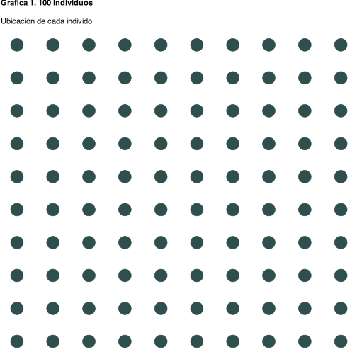
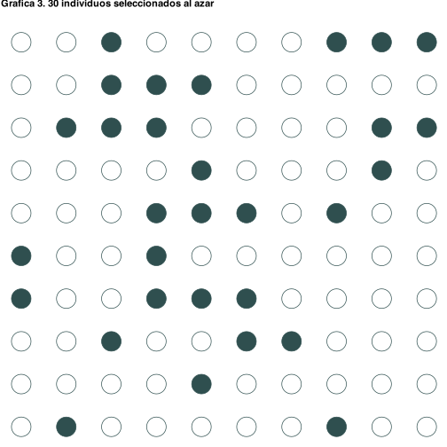

Capítulo 3 El proceso generador de datos (PGD)
Denotemos el modelo poblacional como
\[y_i = \beta_0 + \beta_1 x_i + u_i,\]
donde \(u_i\) captura todo lo que no medimos (habilidad, contactos, suerte). Por desgracia sólo vemos \(y_i\) y \(x_i\), nunca al error.
Cuando tomamos una muestra y corremos una regresión obtenemos estimadores
\[y_i = \hat\beta_0 + \hat\beta_1 x_i + e_i,\]
que producen predicciones
\[\hat y_i = \hat\beta_0 + \hat\beta_1 x_i.\]
La recta \(\hat y_i\) es la mejor aproximación a la recta verdadera \(y_i\) dentro de la muestra… pero no necesariamente fuera de ella. La distancia entre ambas es la raíz de toda incertidumbre que veremos más adelante.
3.1 Construimos una población “de juguete”
Como ejemplo generareron 100 individuos con las siguientes características:
- \(x\) (años de educación) sigue una normal con media 5 y desviación 1.5.
- \(y\) depende linealmente de \(x\) con pendiente 0.5 y un término aleatorio \(u\sim N(0,1)\).

3.2 La relación verdadera en la población
En la siguiente gráfica los puntos representan a los 100 graduados y la línea rosa es la verdadera relación \(y = 3 + 0.5x\):

Esa línea está fuera de nuestro alcance en la vida real porque requeriría encuestar a todos los egresados.
\[ y_i = 2.53 + 0.57 x_i + u_i \]
\[ y_i = \beta_0 + \beta_1 x_i + u_i \]
Tomemos ahora 30 graduados al azar y ajustemos una regresión con ellos. ¿Se parece al PGD?

 PGD Modelo Poblacional
PGD Modelo Poblacional
\(y_i = 2.53 + 0.57 x_i + u_i\)
Modelo muestral
\(\hat{y}_i = 2.36 + 0.61 x_i\)


PGD Modelo Poblacional
\(y_i = 2.53 + 0.57 x_i + u_i\)
Modelo muestral
\(\hat{y}_i = 2.79 + 0.56 x_i\)


PGD Modelo Poblacional
\(y_i = 2.53 + 0.57 x_i + u_i\)
Modelo muestral
\(\hat{y}_i = 3.21 + 0.45 x_i\)
Ahora repitamos esto 10,000 veces.
(Este ejercicio se llama ejercicio de Montecarlo)